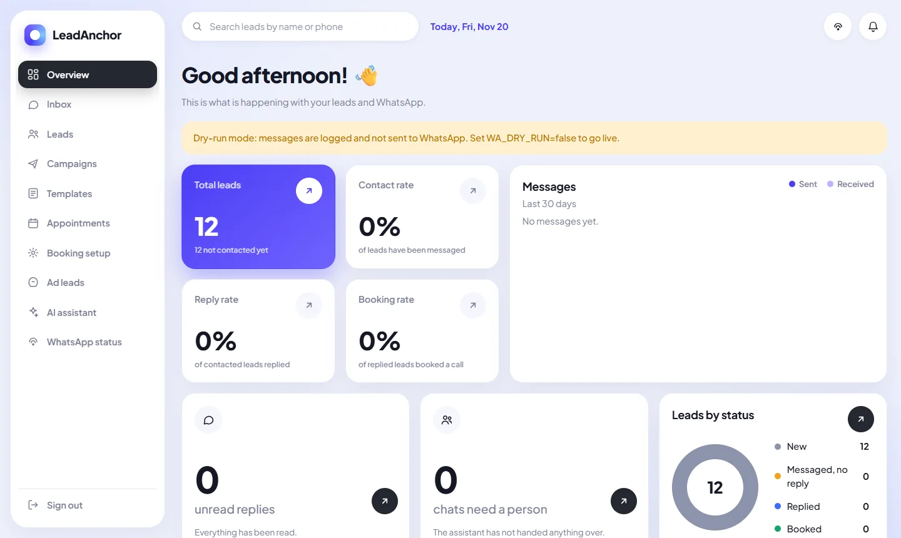
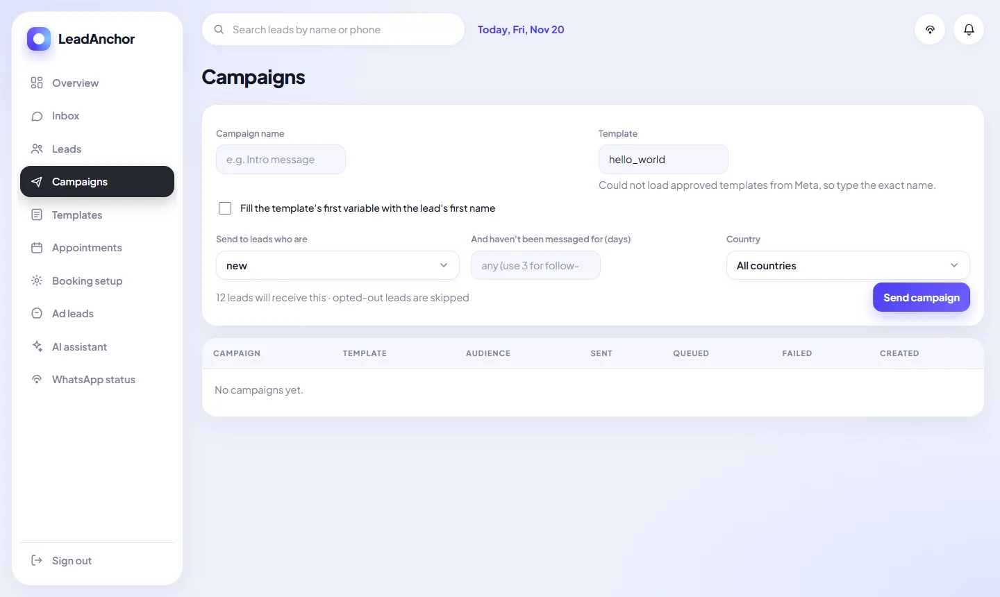
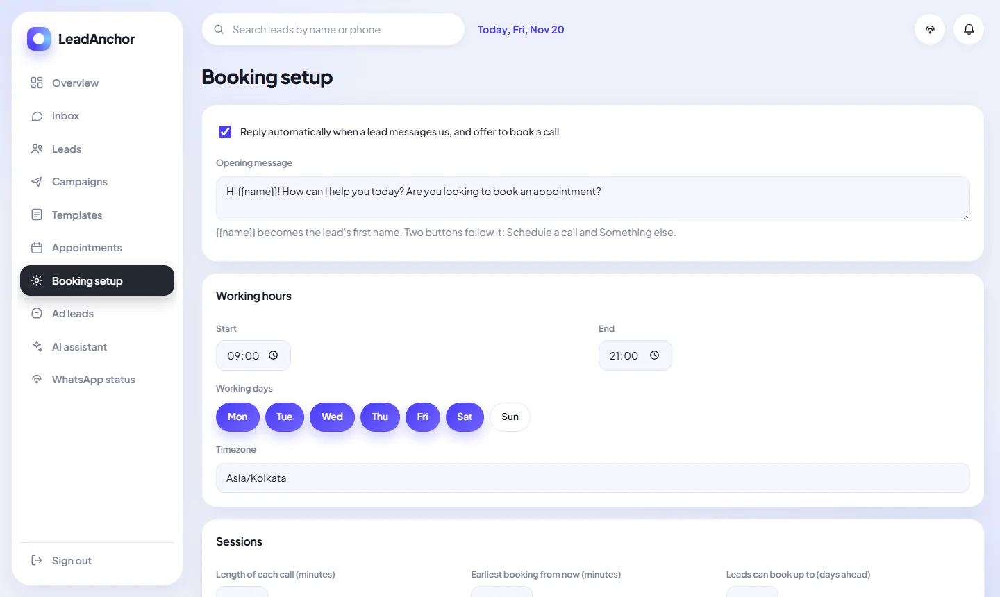
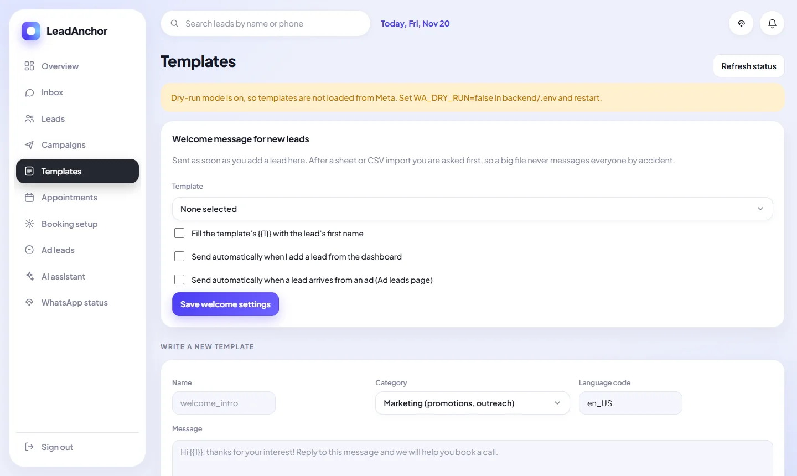
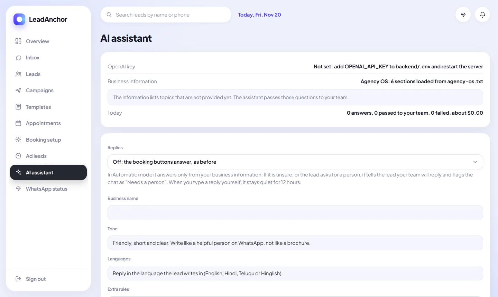

LeadAnchor
Import leads, message them on WhatsApp, and let them book a call by tapping buttons. A dashboard keeps the inbox, campaigns and appointments in one place.

Watch it work
Press play, or jump to a chapter.
Screen recording of the real dashboard, using invented leads. Messages are logged, not sent (demo mode). The lead's WhatsApp replies are simulated through the webhook.
Chapters
The problem
Sales teams lose leads because follow-up is slow and manual, and leads from ads sit in spreadsheets. Automating replies is risky if an AI can promise things the business never offered.
What I built
LeadAnchor imports leads, sends approved WhatsApp templates, and offers booking by buttons. An optional AI assistant answers questions from the client's own information and hands over to a person when unsure.
What it does
Smart import
Excel, CSV or Google Sheet. Understands Meta lead-ad exports, skips test rows and merges duplicates.
Campaigns and follow-ups
Welcome template, first-name personalisation, retries of failed sends and STOP opt-out.
Booking bot
Buttons, then days, parts of the day and one-hour windows, with capacity limits.
Dashboard
Inbox with unread counts, leads, campaigns, template editor and appointments.
Guarded AI assistant
Answers from business information with OpenAI, and hands over when it should not answer.
Ad-lead intake
Receives Facebook and Instagram lead forms through Make.com or any JSON sender.
How the pieces fit
The dashes show the direction of data flow.
Leads in
The conversation
Real screens
Tap any screenshot to enlarge it. All data shown is invented.





Choices that matter
Dry-run by default
The app can be tried end to end without sending a single real message.
Tests can never reach the network
Every test file replaces fetch with a function that throws, so no test can message a real person.
Guardrails on AI replies
A price, link, number or promise word that is not in the business information stops the reply and hands the chat to a person.
The AI stays out of the way
Typing a reply from the dashboard pauses the assistant. A person can take over or hand back.
Careful de-duplication
Duplicates are matched by lead ID, phone, or the same e-mail within 30 days. Edits are never overwritten.
Never guess a country
Numbers without a country code use one configured default.
Where it stands
I would rather be precise than impressive.
Built
- Import, campaigns, booking bot and dashboard
- 670 automated tests, none of which can reach the network
- Ad-lead intake, tried on a live server with a sample lead
In progress / verified by
- Guarded AI assistant, optional and configured per client
Honest limits
- Not yet run with real leads: Make.com and Facebook forms, Google Sheet sync, the Docker deployment and production PostgreSQL
- Screenshots use invented leads